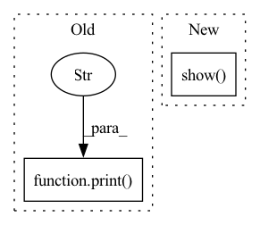

Pattern ID :23269

Before Change
results = plot_util.load_results(dirs, names=qualities + [xlabel],
enable_monitor=False, x_bound=[xlabel, x_bound], use_buf=use_buf)
print("---- load dataset --- ")
// y_names = ["acc/adjusted_r2", "acc/accurancy_trans"]
// eval_policy/coupon_avg_rate
// postfixs = ["coupon_avg_rate", "coupon_predict_rate", "roi_avg", "roi_predict", "sum_avg_gmv", "sum_fos",
// "sum_predict_gmv", "sum_spend"]
After Change
else:
plt.savefig(osp.join(dir_name, save_name), bbox_extra_artists=tuple(texts), bbox_inches="tight")
print("saved location: {}".format(osp.join(dir_name, save_name)))
plt.show()
def scale_index_to_dict(measure, scale_index, scale):
scale_dict = {}
for i in range(len(measure)):
In pattern: SUPERPATTERN
Frequency: 3
Non-data size: 2
Instances
Fragment ID: 73448167
Project Name: xionghuichen/rlassistant
Commit Name: c960619032588e7490bfcecc6c8aa20a04a0bddf
Time: 2020-12-21
Author: zpcxh95@outlook.com
File Name: RLA/easy_plot/plot_func.py
M Class Name: AnonimousClass
N Class Name: AnonimousClass
M Method Name: plot_res_func(17)
N Method Name: plot_res_func(19)
M Parent Class:
N Parent Class:
M File Name: RLA/easy_plot/plot_func.py
N File Name: RLA/easy_plot/plot_func.py
M Start Line: 91
M End Line: 173
N Start Line: 95
N End Line: 150
'>
Before Change
print(f"{_doc.id[:10]}, buffer: {len(_doc.buffer)}, embed: {_doc.embedding.shape}, uri: {_doc.uri[:20]}, chunks: {len(_doc.chunks)}, matches: {len(_doc.matches)}")
if _doc.matches:
for m in _doc.matches:
print(f"\t+- {m.id[:10]}, score: {m.scores["doc_score"].value}, text: {m.text}, modality: {m.modality}, uri: {m.uri[:20]}")
def index(data_set, num_docs, request_size):
flow = Flow().load_config("flows/flow-index.yml")
After Change
print(f"\t+- {m.id[:10]}, score: {m.scores["cosine"].value}, modality: {m.modality}, uri: {m.uri[:20]}, blob: {len(m.blob)}")
import matplotlib.pyplot as plt
plt.imshow(m.blob)
plt.show()
def index(data_set, num_docs, request_size):
flow = Flow().load_config("flows/flow-index.yml")
'>
Fragment ID: 73448168
Project Name: jina-ai/examples
Commit Name: 4de569187f138fc79cc6c08852f13315c1e545bc
Time: 2021-08-17
Author: jakob.kruse@jina.ai
File Name: cross-modal-search/app.py
M Class Name: AnonimousClass
N Class Name: AnonimousClass
M Method Name: check_query_result(1)
N Method Name: check_query_result(1)
M Parent Class:
N Parent Class:
M File Name: cross-modal-search/app.py
N File Name: cross-modal-search/app.py
M Start Line: 38
M End Line: 45
N Start Line: 33
N End Line: 52
'>
Before Change
label = sample["label"][0]
// plt.imshow(img.numpy().astype(np.uint8), cmap="gray")
// plt.savefig("test_tmp.png")
print(f"Label: {label}")
// compute mean and std
img_lst = []
for img_no in range(train_data_set.__len__()):
After Change
packet_sample = next(iter(packet_loader))
plt.plot(np.mean(np.reshape(packet_sample["image"][0].cpu().numpy(), [64, -1]), -1))
plt.show()
packet_data, packet_mean, packet_std = compute_mean_std(train_packet_set)
print("packet mean", packet_mean)
print("packet str", packet_std)
'>
Fragment ID: 73448169
Project Name: gan-police/frequency-forensics
Commit Name: 4134e836d0bfb2595a2c0e859a068e6c6c3ad695
Time: 2021-05-07
Author: wolter@cs.uni-bonn.de
File Name: src/freqdect/data_loader.py
M Class Name: AnonimousClass
N Class Name: AnonimousClass
M Method Name: main(0)
N Method Name: main(0)
M Parent Class:
N Parent Class:
M File Name: src/freqdect/data_loader.py
N File Name: src/freqdect/data_loader.py
M Start Line: 41
M End Line: 74
N Start Line: 39
N End Line: 93